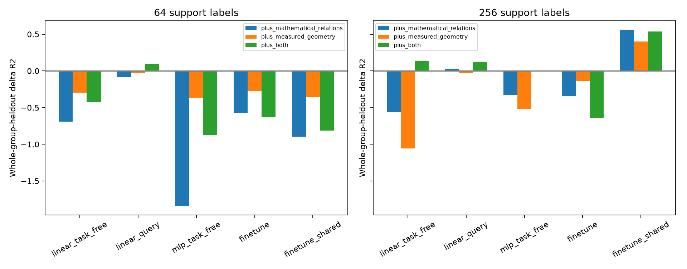

在本轮目标测试之前固定特征与规则，等所有 27 条件测试结束后运行。先导迁移结果及本轮源表征已知，因此仍是追加的探索，不称为整个项目的前瞻主检验。每次留出一个任务组合，包括它的全部种子及目标；五种读出、两种预算、四个特征版本全部报告，岭惩罚固定为 1。
预测目标是对同种子、目标、预算和读出随机模型的准确率差值。基线包括源学习程度、源输出熵与相关性、源—目标按长度条件互信息，以及目标和初始化固定效应。数学特征包括已知恒等式阶数、精确源答案变换核及可证明向量/单因子置换的比例。几何特征包括源查询拼接的跨种子 CKA 和输入变换 CKA，均逐长度去均值。特征标准化只用训练折。

| 读出 | 标签 | 预测版本 | 留组 R² | 相对基线 ΔR² | 平均绝对误差 |
|---|---|---|---|---|---|
| linear_task_free | 64 | baseline | -0.060 | +0.000 | 2.64 pp |
| linear_task_free | 64 | plus_mathematical_relations | -0.754 | -0.694 | 3.43 pp |
| linear_task_free | 64 | plus_measured_geometry | -0.357 | -0.297 | 3.02 pp |
| linear_task_free | 64 | plus_both | -0.488 | -0.427 | 3.24 pp |
| linear_task_free | 256 | baseline | -1.258 | +0.000 | 3.04 pp |
| linear_task_free | 256 | plus_mathematical_relations | -1.824 | -0.565 | 3.51 pp |
| linear_task_free | 256 | plus_measured_geometry | -2.317 | -1.058 | 3.80 pp |
| linear_task_free | 256 | plus_both | -1.125 | +0.133 | 3.04 pp |
| linear_query | 64 | baseline | 0.334 | +0.000 | 2.08 pp |
| linear_query | 64 | plus_mathematical_relations | 0.253 | -0.081 | 2.16 pp |
| linear_query | 64 | plus_measured_geometry | 0.298 | -0.035 | 2.11 pp |
| linear_query | 64 | plus_both | 0.430 | +0.096 | 1.88 pp |
| linear_query | 256 | baseline | 0.038 | +0.000 | 2.13 pp |
| linear_query | 256 | plus_mathematical_relations | 0.070 | +0.032 | 2.10 pp |
| linear_query | 256 | plus_measured_geometry | 0.010 | -0.028 | 2.17 pp |
| linear_query | 256 | plus_both | 0.161 | +0.123 | 1.97 pp |
| mlp_task_free | 64 | baseline | -0.526 | +0.000 | 2.90 pp |
| mlp_task_free | 64 | plus_mathematical_relations | -2.369 | -1.843 | 4.31 pp |
| mlp_task_free | 64 | plus_measured_geometry | -0.890 | -0.364 | 3.26 pp |
| mlp_task_free | 64 | plus_both | -1.403 | -0.877 | 3.66 pp |
| mlp_task_free | 256 | baseline | -0.346 | +0.000 | 2.47 pp |
| mlp_task_free | 256 | plus_mathematical_relations | -0.674 | -0.328 | 2.87 pp |
| mlp_task_free | 256 | plus_measured_geometry | -0.865 | -0.519 | 2.92 pp |
| mlp_task_free | 256 | plus_both | -0.343 | +0.004 | 2.57 pp |
| finetune | 64 | baseline | 0.069 | +0.000 | 2.87 pp |
| finetune | 64 | plus_mathematical_relations | -0.500 | -0.568 | 3.59 pp |
| finetune | 64 | plus_measured_geometry | -0.202 | -0.270 | 3.25 pp |
| finetune | 64 | plus_both | -0.565 | -0.633 | 3.72 pp |
| finetune | 256 | baseline | -0.614 | +0.000 | 3.35 pp |
| finetune | 256 | plus_mathematical_relations | -0.954 | -0.340 | 3.91 pp |
| finetune | 256 | plus_measured_geometry | -0.757 | -0.143 | 3.52 pp |
| finetune | 256 | plus_both | -1.256 | -0.642 | 4.26 pp |
| finetune_shared | 64 | baseline | 0.096 | +0.000 | 3.20 pp |
| finetune_shared | 64 | plus_mathematical_relations | -0.801 | -0.897 | 4.58 pp |
| finetune_shared | 64 | plus_measured_geometry | -0.257 | -0.353 | 3.94 pp |
| finetune_shared | 64 | plus_both | -0.717 | -0.813 | 4.53 pp |
| finetune_shared | 256 | baseline | -0.289 | +0.000 | 3.49 pp |
| finetune_shared | 256 | plus_mathematical_relations | 0.274 | +0.563 | 2.36 pp |
| finetune_shared | 256 | plus_measured_geometry | 0.110 | +0.400 | 2.76 pp |
| finetune_shared | 256 | plus_both | 0.250 | +0.539 | 2.42 pp |